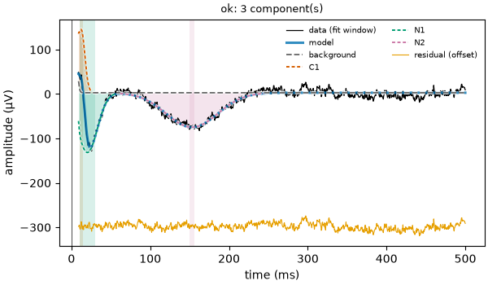
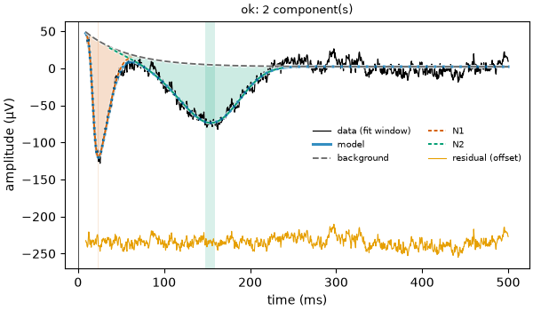

Note
Go to the end to download the full example code.
04: Component fitting¶
Choose the shape of the bumps, and read the numbers that describe them.
Introduction¶
The model has two parts: the bumps (also called components) and the background. This tutorial is about the bumps; the next one about the background.
Each bump is drawn with a shape: a fixed curve that can be moved, stretched and scaled. The shape decides what a bump can look like. Real responses are often asymmetric: they go down fast and come back slowly. A symmetric shape can not follow that, and the model then makes up for it in other ways.
# Import what we need
import numpy as np
from evoparam import fit_response, gen_response, plot_fit
from evoparam.shapes import SHAPES, get_shape
The shapes¶
The shapes evoparam knows are listed in SHAPES. The "ccep" preset uses two:
"gaussian": the bell curve, symmetric. Two numbers: where it peaks (mu) and how wide it is (sigma);"skewed_gaussian": a bell curve that can lean to one side. Three numbers: position (xi), width (omega) and how much it leans (alpha; 0 means symmetric).
The others are for other kinds of responses: for example "gamma" (zero before its
start, then a rise and a slow fall), or "damped_oscillation" for responses that
ring.
print(list(SHAPES))
['gaussian', 'skewed_gaussian', 'exgaussian', 'gamma', 'biexponential', 'damped_oscillation', 'gabor', 'template']
An asymmetric N1¶
We make a curve with an N1 that goes down fast and comes back slowly, built with the
"gamma" shape: it peaks at 24 ms, −150 µV, 20 ms wide at half height. It takes
10 ms to go from its start to its peak, and 28 ms to come back. We add the broad N2 of
the earlier tutorials, a background and noise.
# The N2, the background and the noise
times, signal = gen_response([[150, -80, 80]], seed=3)
# Add an asymmetric N1: gamma shape starting at 12 ms (start, shape, scale in seconds)
n1 = get_shape("gamma").evaluate(times, np.array([0.012, 3.0, 0.006]))
signal = signal - 150 * n1
A small helper prints the bumps with the numbers that describe their form: latency, amplitude, width at half height, rise time (from the onset, where the bump reaches 10 % of its height, to the peak) and decay time (from the peak back to 10 %).
def show(fit):
"""Print each bump with its shape, latency, amplitude, width, rise and decay (ms, µV)."""
for bump in fit.components:
print(
f" {bump.label} ({bump.shape}): {bump.latency_ms:.1f} ms, {bump.amplitude:.0f} µV, "
f"width {bump.fwhm_ms:.1f} ms, rise {bump.rise_time_ms:.1f} ms, "
f"decay {bump.decay_time_ms:.1f} ms"
)
print(f" BIC = {fit.gof.bic:.1f}")
With symmetric bumps only¶
shapes sets the shapes the fit may use. First, the bell curve only.
fit_gauss = fit_response(times, signal, preset="ccep", shapes=("gaussian",), random_state=0)
show(fit_gauss)
fig = plot_fit(fit_gauss)

C1 (gaussian): 12.4 ms, 141 µV, width 10.7 ms, rise 9.8 ms, decay 9.8 ms
N1 (gaussian): 20.3 ms, -135 µV, width 29.5 ms, rise 26.8 ms, decay 26.8 ms
N2 (gaussian): 153.0 ms, -78 µV, width 77.0 ms, rise 70.2 ms, decay 70.2 ms
BIC = 58.6
A symmetric N1 can not follow a fast fall and a slow return. So the model puts the N1 too early (20 ms instead of 24) and too wide (30 ms instead of 20), and adds a bump going up at 12 ms (C1) to straighten the fast fall. C1 is not in the brain: it is made by the wrong shape.
With bumps that can lean¶
fit_skew = fit_response(times, signal, preset="ccep", shapes=("skewed_gaussian",), random_state=0)
show(fit_skew)
fig = plot_fit(fit_skew)

N1 (skewed_gaussian): 23.4 ms, -157 µV, width 20.7 ms, rise 10.7 ms, decay 29.0 ms
N2 (skewed_gaussian): 153.6 ms, -78 µV, width 83.3 ms, rise 87.2 ms, decay 67.9 ms
BIC = 53.3
Now one bump is enough for the N1: 23.4 ms, −157 µV, 21 ms wide, close to the truth (24 ms, −150 µV, 20 ms). Its rise (11 ms) is shorter than its decay (29 ms): the shape found the asymmetry. And the BIC is lower (53 against 59): the model is better while using fewer numbers. The rise and decay (11 and 29 ms) are close to the true ones (10 and 28 ms), although the skewed bell is not the same curve as the gamma one that made the N1.
Note
The "ccep" preset allows both shapes (("skewed_gaussian", "gaussian")) and
chooses by the BIC. Look at the figure: a bump of the other sign stuck to another
one, as C1 above, is often the sign of a shape that does not fit.
Fit numbers and reported numbers¶
Each bump has two sets of numbers:
the fit numbers (
params, named inparam_names): the ones the shape is written with, and that the fit moves. They depend on the shape:muandsigmafor the bell curve,xi,omegaandalphafor the skewed one;the reported numbers: latency, amplitude, width, onset, offset, rise, decay, area. They are measured on the fitted curve of the bump, so they mean the same thing whatever the shape. These are the ones to use in an analysis.
n1_bump = fit_skew.components[0]
print(dict(zip(n1_bump.param_names, np.round(n1_bump.params, 4), strict=True)))
print(f"latency {n1_bump.latency_ms:.1f} ms, width {n1_bump.fwhm_ms:.1f} ms")
{'xi': np.float64(0.0172), 'omega': np.float64(0.016), 'alpha': np.float64(4.6706)}
latency 23.4 ms, width 20.7 ms
For the skewed bell, xi (in seconds) is not the latency: when the bump leans, its
peak is not at xi. Always use latency, not a fit number.
The width limits¶
A bump’s width at half height must stay between min_fwhm and max_fwhm (in
seconds; 3 and 250 ms for "ccep"). The lower limit keeps the model from fitting
single spikes of noise; the upper one keeps a bump from turning into a slow drift,
which is the job of the background. A bump that ends at a limit is worth a look.
print(fit_skew.settings["min_fwhm"], fit_skew.settings["max_fwhm"])
0.003 0.25
Conclusion¶
The shape decides what a bump can look like. With a shape that can not follow the response, the model shifts and widens the bump and adds bumps that are not there. The skewed bell follows asymmetric responses. Report the measured numbers (latency, amplitude, width…), not the fit numbers of the shape.
Total running time of the script: (0 minutes 1.489 seconds)